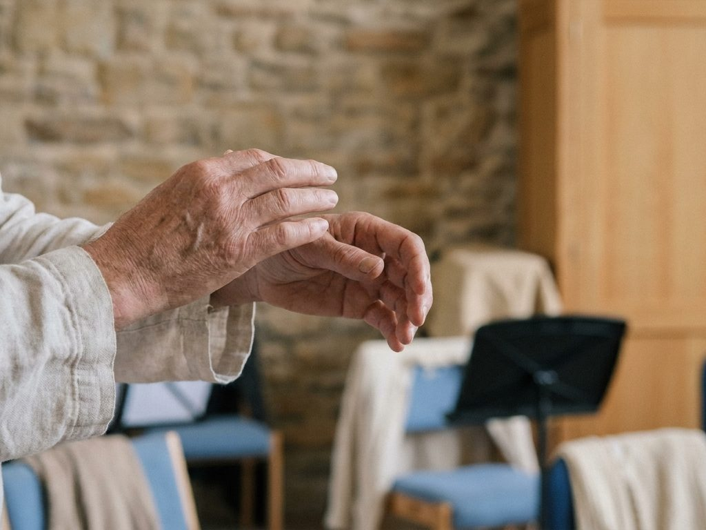
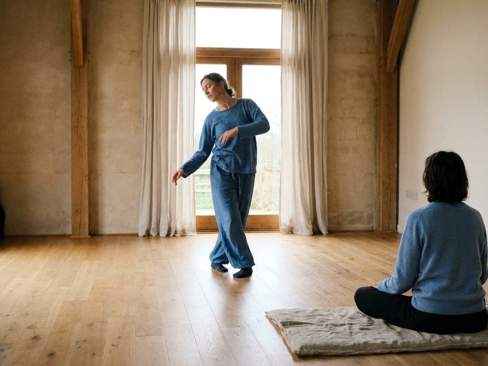
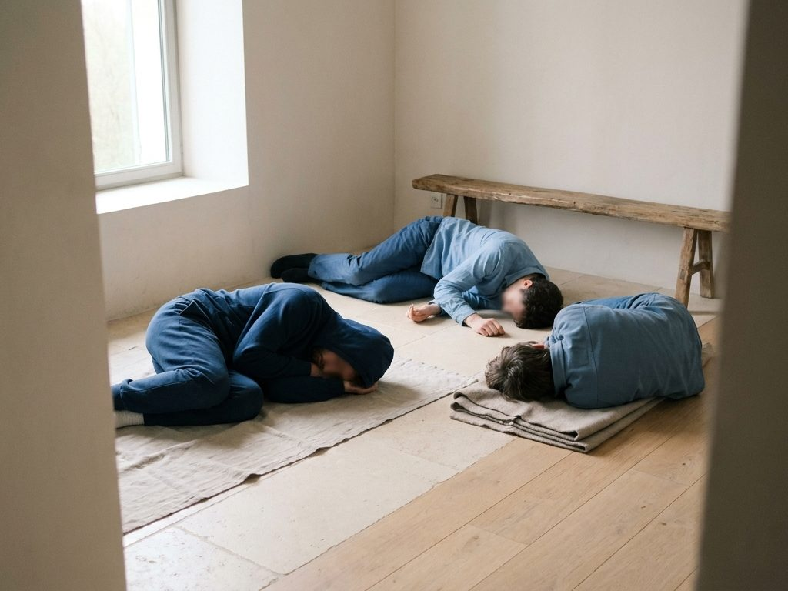
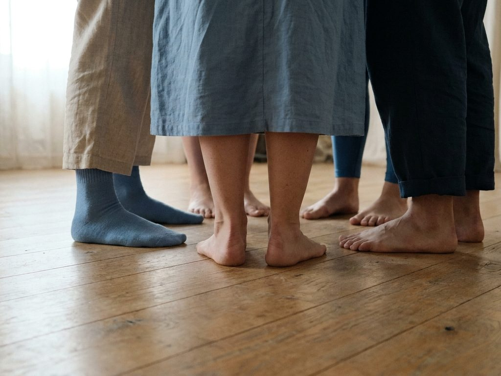
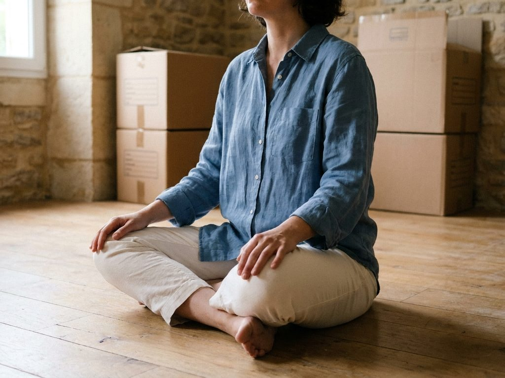
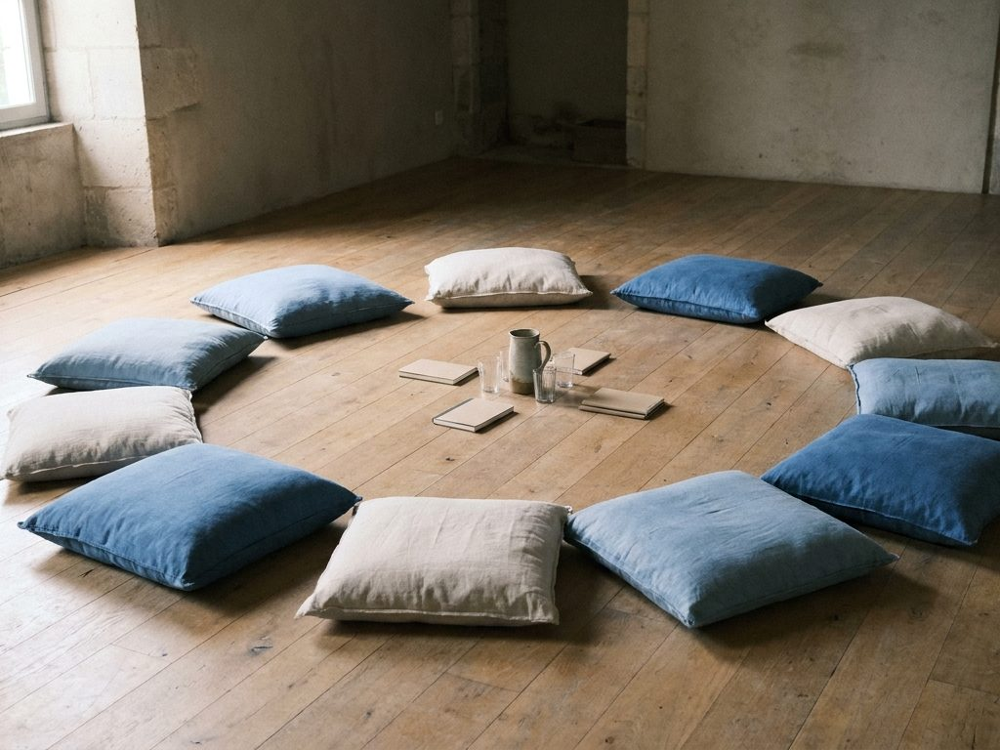
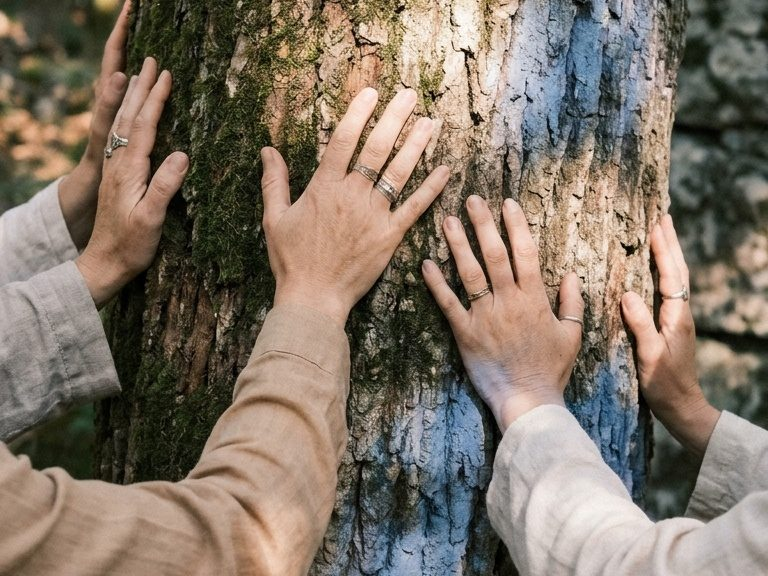
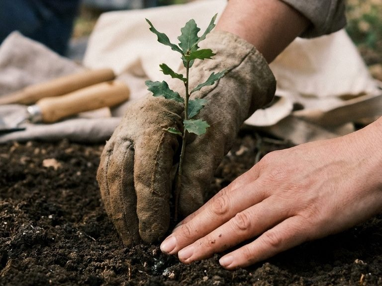
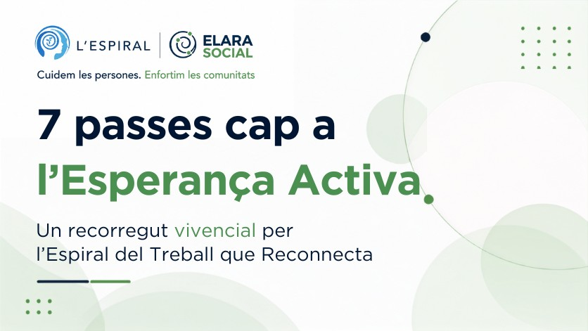

Taller presencial a Vic
El Treball que Reconnecta i Moviment Autèntic
Un espai per escoltar el cos, reconnectar amb allò que ens importa i explorar la nostra experiència a través del moviment.
Si necessites ajuda, estem al teu costat.
T'escoltarem i t'orientarem sobre el que et pot anar millor.
- Psicoteràpia per a adults
- Teràpia de parella
- Psicoteràpia online
- Mentoria en Mindfulness
- Tallers i formacions
Quan ens costa posar-hi paraules
Hi ha moments en què sabem que alguna cosa ens importa, ens preocupa o ens commou, però ens costa posar-hi paraules.
El cos també té una manera de saber. Una tensió, una necessitat d'aturar-nos, un gest o un impuls de moviment poden mostrar parts de la nostra experiència que encara no havíem pogut reconèixer.
Aquest taller proposa deixar per una estona de buscar respostes i escoltar què apareix quan donem al cos temps, atenció i llibertat per moure's, o per no moure's.

El Treball que Reconnecta i el Moviment Autèntic
El taller posa en diàleg dues propostes diferents però compatibles.
El Treball que Reconnecta, de Joanna Macy, ens convida a reconnectar amb allò que estimem, apropar-nos a allò que ens preocupa i descobrir com volem participar en el món.
El Moviment Autèntic, que neix del treball de Mary Starks Whitehouse i que va desenvolupar Janet Adler, és una forma d'escolta corporal basada en l'impuls intern, el moviment espontani i la presència d'un testimoni.
No buscarem ballar bé ni fer moviments determinats. La invitació serà escoltar:
- Què s'està movent a la meva vida i al meu voltant?
- Què passa quan deixo de decidir com m'he de moure?
- Què apareix quan dono espai al cos?
- Què passa quan algú testimonia la meva experiència sense jutjar-la ni interpretar-la?
- Com torno al món que m'envolta?

Una altra manera d'apropar-nos a l'experiència
Alternarem moments de paraula, consciència corporal, moviment, quietud i testimoni. Deixarem que el moviment aparegui des de dins, sense haver de saber abans què volem expressar.
Poden aparèixer sensacions, emocions, imatges, records o simplement l'experiència del cos movent-se. Practicarem estar presents davant del que apareix, i acabarem amb un espai de paraula per integrar-ho.

A qui va dirigit?
Aquest taller pot ser per a tu si:
- Tens curiositat per explorar una relació més profunda amb el teu cos.
- Vols un espai on no hagis de saber prèviament què has de fer o què has de sentir.
- Practiques Mindfulness, meditació, ioga, dansa o treball corporal i vols provar una altra aproximació.
- T'interessen el Treball que Reconnecta, l'Esperança Activa o el Moviment Autèntic.
No cal saber ballar ni tenir experiència prèvia. El moviment no té cap finalitat estètica ni hi ha una manera correcta de fer-lo.

Què et pot aportar
Escolta corporal
Notar sensacions, impulsos, moviment i quietud quan deixes de dirigir el cos des de fora.
Una primera experiència de Moviment Autèntic
Els seus principis bàsics i els rols de qui es mou i de qui testimonia.
Ser testimoniat
Que algú sigui present davant la teva experiència sense corregir-la ni interpretar-la.
Una entrada corporal al Treball que Reconnecta
Com el cos pot participar en preguntes sobre el que estimem i el que ens sosté.

Com serà la sessió?
Entre 2,5 i 3 hores, en quatre moments:
Introducció
El marc del Treball que Reconnecta i alguns principis del Moviment Autèntic.
Preparació corporal
Propostes senzilles de consciència corporal i moviment.
Moviment i testimoni
Moure's des de l'impuls intern, amb la presència d'un testimoni.
Cercle de paraula
Un espai per compartir el que cadascú vulgui de l'experiència.

-
Detalls pràctics
- Data: diumenge 8 de novembre
- Horari: de 18 h a 20.30–21 h
- Durada: 2,5–3 h
- Format: taller presencial
- Grup: places limitades
- Experiència prèvia: no és necessària
- Roba: còmoda i que permeti moure't lliurement
- On? Ronda de Francesc Camprodon, 25, 1r 1a. 08500 Vic
- Preu: 35 euros
-
Impartit per
Aleix Boronat
Terapeuta humanista, professor de Ioga i Mindfulness, facilitador del Treball que Reconnecta i practicant de la Disciplina del Moviment Autèntic amb la Betina Waissman.
La proposta integra l'experiència en treball corporal, Mindfulness i psicoteràpia humanista amb el Treball que Reconnecta i la pràctica del Moviment Autèntic.
Aquest taller no forma part de la Discipline of Authentic Movement de Janet Adler ni pretén oferir-ne una formació. El Moviment Autèntic constitueix una de les fonts i pràctiques que inspiren la proposta.
Què és el Treball que Reconnecta?
El Treball que Reconnecta, creat per Joanna Macy, és una proposta vivencial per afrontar el malestar davant les crisis personals, socials i ecològiques sense quedar atrapats en la impotència. La seva Espiral passa per tres moviments:
- Consciència: reconnectar amb el que estimem i amb el que ens preocupa.
- Comunitat: recordar que no estem sols i que formem part de xarxes i de sistemes vius.
- Acció: trobar un pas següent possible, concret i coherent amb el que volem cuidar.

Esperança Activa
L'Esperança Activa no és confiar que tot anirà bé, sinó reconèixer què és important per a nosaltres i participar en allò que volem cuidar o transformar, encara que no en puguem controlar el resultat.

Vols fer un tastet d'Esperança Activa?
Si vols conèixer el Treball que Reconnecta d'una manera senzilla, pots començar per les 7 passes cap a l'Esperança Activa: recorreguts breus, online i gratuïts sobre el malestar personal, la salut mental comunitària, l'acció climàtica i els reptes socials, creats amb Elara Social.

Opinions de pacients i alumnes als nostres perfils de Google Maps.
-
L'Espiral d'Osona
Ronda de Francesc Camprodon, 25, 1r 1a, Vic (Osona)
-
L'Espiral del Prat
-
L'Espiral de Barcelona